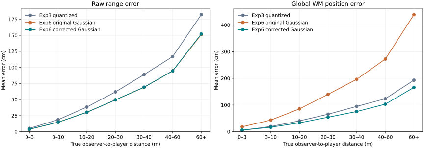

Exp6 · corrected Gaussian in live games
100 completed matches were found in AutoTest2D exp6logs3 and the matching player-log directory exp6-logs3. The original Exp6 Gaussian run and the archived Exp3 quantized run each contain 200 games.
Correcting the range lookup lowered player WM error from 170.60 to 66.38 cm across the two Gaussian live batches. The corrected mean is consistent with the separate fixed-pose replay estimate of 67.48 cm. These are independently played matches.
All 2,200 observer logs finalized with corrected Gaussian localization enabled. Every one of the 10,769,374 PlayOn decisions logged a single 360° visual update and same-cycle reference truth, with no skipped decision placeholders or teammate payloads. All 226,156,854 identified player positions were fresh. All 100 match scores agree with AutoTest2D (421–410 goals, 42/16/42 left wins/draws/losses). Both sides used the same configuration.
| Mean error | Exp3 quantized | Exp6 original Gaussian | Exp6 corrected Gaussian |
|---|---|---|---|
| Raw player range MAE (cm) | 75.52 | 59.64 | 60.63 |
| Raw relative player position (cm) | 78.07 | 62.86 | 63.90 |
| Signed player range error after localization (cm) | — | 158.812 | -0.004 |
| Player WM position (cm) | 80.04 | 170.60 | 66.38 |
| Player WM velocity (m/cycle) | 0.0942 | 0.0558 | 0.0797 |
| Ball WM position (cm) | — | 158.15 | 61.26 |
| Ball WM velocity (m/cycle) | — | 0.1503 | 0.1165 |
| Self WM position (cm) | — | 12.96 | 3.74 |
| Self WM looking direction (°) | — | 0.250 | 0.250 |

Player WM error by true distance, cm
| True distance (m) | Exp3 quantized | Exp6 original Gaussian | Exp6 corrected Gaussian |
|---|---|---|---|
| 0–3 | 5.53 | 18.28 | 6.04 |
| 3–10 | 19.56 | 43.69 | 16.70 |
| 10–20 | 40.59 | 85.47 | 33.28 |
| 20–30 | 65.49 | 140.08 | 54.30 |
| 30–40 | 94.84 | 196.46 | 75.63 |
| 40–60 | 123.52 | 272.32 | 103.30 |
| 60+ | 193.13 | 438.86 | 166.00 |
All means use equal weight per eligible observer/object/cycle in PlayOn. The raw range comparison uses identified seen players. The WM means use available valid estimates with reference truth. The Exp3 archive supports comparisons for players. A dash marks an unavailable archival measure.
Baseline and quantization comparison · Fixed-pose replay · Metrics and match scores · Temporal denoising study
exp=rcssserver-denoise/experiments/exp6
python3 "$exp/reporting/analyze_logs.py" logs/exp6-logs3 logs/exp6-analysis/fixed-exp6logs3 --require-corrected --autotest AutoTest2D/out/exp6logs3